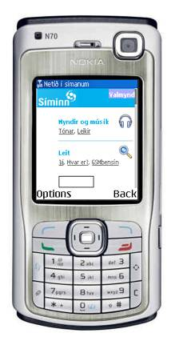
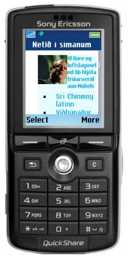
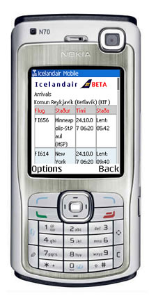
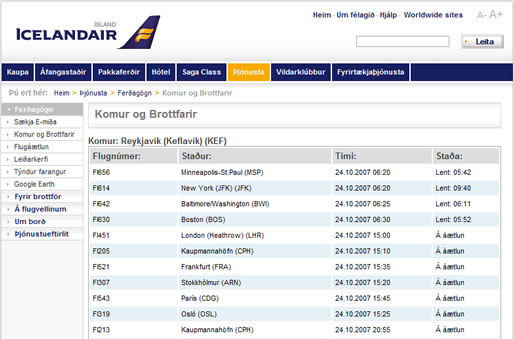
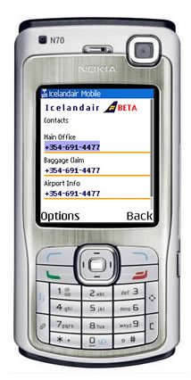

Designing and Developing mobile web sites in the real world, part 2
Article written by Brian Suda and Chuck Cors.
Introduction
Ok, so now we've got some of the theory out of the way, we'll turn our attention to more practical matters. In this part I'll look at 2 case studies of sites I helped to develop, looking at problems we faced, and how we overcame them. I'll also spend some time on server/browser sniffing, and standards support for mobile devices.
If you haven't already read part 1 of this great article, do so here before carrying on.
Case studies
Now I'll now focus on two case studies to show how the team at TM Software helped create 2 mobile sites, and the kinds of issues we faced.
Siminn Telecom 3G Mobile development
In August 2007, Siminn - the largest telecom in Iceland - rolled out their 3G network. As part of this rollout, they launched an accompanying 3G-optimized mobile website that would showcase their enhanced services and inspire customers to surf the mobile web. This site offers a wide spectrum of mobile-centric downloads - ringtones, games, movie trailers, wallpaper, etc. Its functionality dwarfs that of their legacy mobile web presence. Wikipedia defines "3G" in this way:
3G is the third generation of mobile phone standards and technology, after 2G. It is based on the International Telecommunication Union (ITU) family of standards under the International Mobile Telecommunications programme, "IMT-2000". 3G technologies enable network operators to offer users a wider range of more advanced services while achieving greater network capacity through improved spectral efficiency. Services include wide-area wireless voice telephony and broadband wireless data, all in a mobile environment (source.)
In tandem with the launch of their 3G mobile website, Siminn also launched a slightly lighter version of the same site - a 2G-optimized mobile presence to serve less powerful phones. Both sites are anchored to the same reservoir of information, but the 3G site makes less-restricted use of CSS, images, and other coding ornamentations.
Accessing either of these portals is free if you are a Siminn customer. Basically this means that you are not billed for network downloads while on these pages. In this way Siminn has begun to escort their customer base into the brave new arena of the mobile web. And a concurrent benefit of their strategy is that they are also opening the door on the dawning world of mobile commerce.
The primary demographic that Siminn is seeking to capture with their enhanced mobile web presence is the "Bored now" contingent, thus one of the motivating criteria for us when we coded the GUI was that the user should be greeted with an enticing array of eye candy when they hit the site. They are not surfing the Siminn web because of some urgent or repetitive need for information. In essence, they have come to the Siminn mobile web to be entertained.
The only distinction Siminn makes concerning the dimensionality of the user-experience is whether the device is 2G or 3G enabled. As stated before, 2G devices are sent to a slightly lighter version of the 3G site. This is illustrated by Figure 1, the basic design that has minimal styling and multimedia. Figure 2 is the same site with more design and multimedia which has been optimized for the 3G network. It is important to reiterate that both sites are based upon the same body of information. It is only the decorative elements that distinguish one from the other.
Figure 1: Default design for all devices with basic stylized lists
Figure 2: 3G version of the mobile site with more multimedia and colored styling
Later, I will talk about some basic ways to detect a device, because once you know what the device is, you can serve it a version of your mobile web site optimized to provide a good experience on that particular device. This is exactly what Siminn are doing. By detecting the type of phone, they are presenting the customer with the most appropriate version of the page – either the 3G enhanced or the more basic design.
The long term utility of Siminn's flagship 3G (and 2G) mobile presence remains to be seen. Will it thrive and prosper or will it undergo some manner of premature obsolescence? Certainly this question cannot be answered at the present time. At the very least, however, it may be said that Siminn's foray into the uncharted waters of what is, essentially, their own swimming pool, will have the long term benefit of raising the public's awareness of the Mobile Web. In many respects, the Mobile Web today is analogous to the World Wide Web circa 1993: a rising tide on the cusp of becoming a full-blown tsunami.
Icelandair
Icelandair is a large airline in Iceland that flies to a multitude of destinations in North America and Europe. In the spring of 2007, they became interested in establishing a mobile web presence. Since their traditional website is quite deep, the first task we were faced with was figuring out what subset of data would be most useful to a visitor of the hypothetical Icelandair mobile presence. Almost immediately we recognized that the demographic we'd be catering to would be the "Urgent now" group. For example, I'm on my way to JFK airport and suddenly I hit heavy traffic on the Long Island Expressway. My main concern becomes whether I'll miss my flight or not? If I had access to a constantly updated stream of Icelandair departures, I could quickly allay my fears (or, perhaps, stoke my fears as the case may be).
With that in mind, we chose not to try and replicate the entire Icelandair website, but rather to cleave from it four or five of its most crucial elements. The items we selected were:
1 - Flight Status
Access to updated arrival/departure times is, perhaps, the single most useful piece of data for a user of the Icelandair mobile web. Within three clicks I am shown a table of up-to-the-minute arrival and/or departure times. This feature draws upon the same XML feed as the conventional website. The difference is the XSLT that facilitates the styling. This same strategy is used for the News/Alerts section as well. Figure 3 is the Arrivals table displayed on a mobile device, where as figure 4 shows the same data, but styled for a desktop browser. You can see how all the same information is present, but in a different style.
Figure 3: Departures table. The mobile version shows the same data as Figure 4, just reformatted into a different display using XSLT.
Figure 4: Arrivals and Departures table on the website
2 - E-ticket Retrieval
This allows customers to enter either their credit card number or their booking number and then receive their electronic airline ticket via email. The next iteration of this feature will enable customers to receive their e-tickets via SMS too. This page contains the only form on the mobile site. In general, forms should be avoided because form input via a mobile device can be a tricky endeavor. However, there are certain coding practices that can simplify form input. For example, if your form field should only accept numeric input, then you should make use of the -wap-input-format property of WAP CSS. The Apple iPhone will automatically set the input to numeric if the name of the input element is set to certain values - phone or zip for example.
3 - News/Alerts
This item features the breaking news stories that are featured on the homepage of Icelandair's conventional website. These may include travel advisories, flight cancellations, delays, etc. The section was a snap to implement because the Icelandair CMS was already accepting and vending news for their conventional site. Our only task for us was to create an XSL file that would output the same news items in a suitable format for mobile devices.
In future iterations of the Icelandair mobile web, the news section will contain only the subset of news that is specifically useful for a mobile user. For example, a news item on the conventional web might be something concerning a change in executive leadership of Icelandair Group. This item, while news-worthy, is not really mobile news-worthy. Mobile users only need to be shown news items that have some inherent urgency.
Figure 5: Mobile News page with an image and news story
4 - Contacts
A brief list of the most vital telephone numbers for Icelandair customer support: Main Office, Baggage Claim and Airport Info. For a usability enhancement, any of these numbers can be instantly dialed simply by clicking them because the phone supports the tel protocol. Much like your desktop browser recognizes a mailto: link as an email address, mobile devices recognize tel: links and phone numbers.
Figure 6: Contact page containing clickable numbers that automatically dial the number
Although Icelandair's mobile web is still in beta, the company has taken its first steps toward establishing an eminently useful presence in the mobile arena. Its site is light, lean, and no-nonsense.
How to detect phones
There are several ways for your website to detect the browser viewing it is on a phone and its capabilities. I'll outline briefly a few tips, link to a couple resources, and talk more about what you can do with that information rather than how get the data. With this information you can tailor the customers experience to their device so it is the best possible. That way they can leverage the most out of their own phones features and capabilities rather than being stuck with a cut-down version of the full site.
User-Agent Strings
As you probably know, a user-agent string is the string that a browser announces itself as, for instance IE7's UA string is:
Mozilla/4.0 (compatible; MSIE 7.0; Windows NT 6.0)
There has been a big stink over sniffing user-agent strings, and I personally go back and forth on the relative benefits and drawbacks of the technique. The concept of sniffing for a user-agent string in itself is not bad or evil; it is what you do with this information where most sites completely fail. For example, I have seen banking websites that sniff the UA string and try to force you to "upgrade to IE6," even if you are using IE7. Fully capable browsers with small market shares often get excluded from sites even thought they could probably run the whole site comfortably.
This is why browsers like Opera, and Firefox with plugins, allow you to lie about what browser you are using. The problem is not the sniffing of the UA string, but the fact that companies do evil, incorrect things with the data. Do not assume that just because the UA string is not in your enumerated list of “Accepted strings”, it is not possible to view the site. This is where you build in progressive enhancements to the website experience.
Object detection is another method to consider, where you search for specific objects in the target browser to see whether it will run your features. This has the advantage that it is browser independent, and if a browser does not have the support required to run a certain feature, it will just avoid the feature altogether, rather than breaking. Then if support is added, it will pick up that feature without you having to change your code.
WURFL
WURFL is an open source list of known phones and their capabilities. This can be put into a database and when a mobile device visits the your site you can sniff the UA, look-up the capabilities of that device (including screen-dimensions, default browser, etc) and serve them the best possible experience.
A simple example is the tel protocol. Desktop Browsers recognize a handful or different protocols - http, ftp, mailto, and a few others. One that they tend not to recognize is the tel protocol. href="tel:1234567890" allows you to click a link and the system will dial that number. For a desktop machine this is not very practical, the vast majority of us don't make phone calls via the computer (although skype re-invented this as the callto protocol). A phone, on the other hand, is a perfect machine to use the tel protocol for phone related links, but not all phones support it, so you want to check first.
Using WURFL and your favorite programming language, you can make something like the following:
if ($tel_capable == true){
echo 'click to call me at <a href="tel:1234567890">1234567890</a>';
} else {
echo 'call me at 1234567890';
}
This allows you to generate tel links for phones that can handle it, but not for less capable phones. The same might go for image dimensions. Knowing the screen-size you can increase or reduce your masthead logo to fit accordingly. It does give the same information no matter what the device or capabilities, but you get a more or less enhanced experience.
HTTP Headers
Some devices send along a special header with each HTTP packet, which gives more information about the browser and version. It is similar to the UA string, but is device dependant. The additional header property is called Profile and is sometimes a URL to a file that can be extracted and the device capabilities extracted. Blackberries do this with a link to an RDF file that tells you more about the device than you can imagine. A URL from a blackberry devices looks like this:
http://www.blackberry.net/go/mobile/profiles/uaprof/[BlackBerry-model]/[software-version].rdf.
Your server can fetch that RDF file, cache it and parse it for various capabilities. The RDF vocabulary is a standard across many mobile devices. Vendors that use this approach allow mobile sites to keep up-to-date with any new devices, without having to keep their own database of device types.
Every year there are hundreds of new phones on the market not to mention the legacy phones that have already been sold and are used on a daily basis. It is impossible to keep a complete list of every phone and their capabilities. Even if that were possible, there is the issue that individual carriers using the same phone might disable certain capabilities. It is a pretty hairy world of devices out there - there is no magic bullet! No matter how much you read and think you know, you will always have to test and retest over and over and be content with slight differences between devices.
What works and what doesn't?
After several sites, you quickly learn what you can and can’t expect to work. This is a short list of things to keep an eye on when going mobile. You can find more details about standards support in Opera Mini/Mobile 4 here:
JavaScript
There are a few basic coding items to avoid in the mobile web space. Chief among these, at least for now (now being 10/2007), is client-side scripting. While it's tempting to try and port that elegant bit of AJAX from your conventional web to your mobile web, you will only create headaches for yourself. One of the central challenges of coding for the mobile web is how to create a compelling user experience without resorting to any form of scripting voodoo. Some browsers do support various levels of JavaScript, but as a developer you should not expect it to work across all devices. This is a perfect example of progressive enhancement possibilities. If the site works without JavaScript, then all devices can work with the site. At this point, you can begin to add JavaScript into the code to enhance the experience for the few browsers that do support it. JavaScript also tends to be a pretty heavy processor hog, so continuous scripting can drain a battery fast – just because you can doesn’t always mean that you should.
CSS Styling
In terms of CSS, the main thing to remember is that mobile browser support for stylesheets varies greatly. Thus, I would personally advise you to keep things simple. It is also a good idea to constantly be testing your pages on an array of actual devices. This is the only reliable way to see what works and what doesn't. For example, you may discover that 4 out of 5 devices support positioning of background images. On the 5th device, however, the background image simply disappears. The question you then must ask yourself is: do I find some other way to code this or do I accept the fact that one device out of five will not see the background image?
Fonts
From an aesthetic standpoint, the single most important thing to remember is that most mobile devices default to their own font sizes and families regardless of styling. Thus, when working on the Siminn project we made no attempt to influence font size or family. In cases where we wanted a larger font, we simply relied on the generic XHTML heading elements. That said, we did make one important and quite useful discovery. In general, the default font size of every given device was too big for our needs, and we tried to work out how to decrease it. What we discovered is that the inclusion of font-size=smaller in the body tag worked as a kind of global reset for font sizes in every device we tested. With this little bit of code we were able to sufficiently reduce the default font size and thus more faithfully reproduce the design that we had been tasked with coding.
HTML Mark-up
XHTML-MP - the mobile web subset of XHTML - is fully supported on most modern devices. Therefore, make good use of the elements contained in XHTML-MP. Think in terms of un-styled, accessible, semantic, valid mark-up. There are enough elements at your disposal in XHTML-MP to faithfully render most mobile web designs. But the key is to make your pages legible with or without the accouterments of CSS.
Conclusions
These two seemingly simple case-studies demonstrate the vast difference in needs of the customers. As you start into the world of mobile development there are several things you need to keep in mind. Sites will never be pixel perfect! This is a reality on the 3-4 major desktop web browsers, and with hundreds of different phones and mobile browsers to consider as well this problem is compounded enormously! There is no silver bullet. You can't read 2 books and several articles about mobile web development and cover everything. Much of the effort is trial and error. When starting out, emulators are a good way to get a rough idea of how the site will work. It gives you some feel for the navigation, architecture and flow of the site, but the look and feel varies from the emulator to the real device. The best thing you can do is get a few real phones to test on. I'm sure between yourself, co-workers and a few friends, you can manage to test your site on a good cross-section of the phones out there. Finally, there is some help. The W3C mobile web initiative does have a checklist to see how well your site is doing and so does dev.mobi - if you take heed of these two lists, your site should give a quality experience to most customers.
Mobility in our daily lives is ever increasing. The ability to get data, when we want it, from anywhere and any device is the future of Internet. The cell phone is just the tiniest jumping off point in this vast new world of the mobile web.
This article is licensed under a Creative Commons Attribution, Non Commercial - Share Alike 2.5 license.
Comments
The forum archive of this article is still available on My Opera.
No new comments accepted.